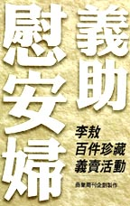

現場拾遺
以下是條列式的點滴回憶，以補報紙及電視新聞之不足。
- 首先，在大約 13:40 時候，國父紀念館的廣播說：「各位來賓，節目即將開始……」顯然是把平常的錄音帶拿來放，有點混。接著，又說「為尊重演出權益，節目中請勿攝影、……」這就更混啦。
- 可怕的事情發生了！廣播居然說「…請肅立。」糟糕，根據從小到大的制約，接下來一定是「唱國歌」無疑！兩秒後，果然不錯，我只好很不甘願地起立應付一下，心裡在想不知道大便要不要唱國歌？事後我問李敖先生「你怎麼唱完國歌才來呀？」他笑說「我躲掉了！」
- 唱完國歌後約三分鐘，躲掉國歌的李敖入場了，引起許多人的掌聲，以及許多人跟著別人拍手而眼睛尋找李敖在哪裡（我就是其中一個）。李敖進場後馬上被媒體包圍。
- 不久，連方瑀從舞台右邊的側門進場，媒體馬上就包圍她，比剛才李敖還大包，顯然官夫人和前中國小姐的魅力還是勝過一籌的。當然，我因為坐得遠，聽不到連方瑀女士講了些什麼話，但我想各位用膝蓋想也知道她會說、能說哪些話。
- 主持人之一的蔡琴實在太聒噪了，簡直到了喧賓奪主的地步，她似乎忘記這是什麼場合了。大家今天來到這個會場，都是有崇高的目標的，主持人需要降格以求嗎？輕鬆固然是好的，但是限度拿捏得不好。相較之下，馬英九先生的風度翩翩，值得大家鼓掌！
- 第二組主持人之一是 TVBS 主播張雅琴，她居然不知道「山光澹澹圖」的「澹」怎麼念。我感到相當驚訝，第一個驚訝是這個字通「淡」字，不是很基本的字嗎？第二個驚訝是，上台前怎麼沒有事先準備？這好像和播報新聞的專業形象不太相稱。
- 義賣進行中，中視公司以一百萬買下了陳少白「不是真情懶放懷」詩，並送給國父紀念館，我覺得這是很好的處置。但是華視就比較囉唆了，在別人叫價數次後，突然叫價一百萬買下許世英視察黃河水災詩，又把它捐出來再義賣一次。這樣做，等於是白捐一百萬，但是何必如此畫蛇添足呢？這樣子一來，又得從頭叫價，簡直是浪費大家時間。後來省議會議長劉炳偉也來這一套，真是倒人胃口。
- 在賣出董作賓董玉京父子的甲骨文書法後，現場有人大喊：「我就是董玉京！誰買了這件，我再送他一幅！」此亦佳話也。
- 義賣完畢之後，蔡琴要義唱一首歌，現場叫價到五萬，蔡琴和張雅琴各加一萬，使這首清唱的〈最後一夜〉捐了七萬塊。此二「琴」讓我有一個感覺，就是太小氣了，怎麼只捐一萬呢？蔡琴身上的鑽石都不止一顆呀！
- 老實說，我還滿喜歡蔡琴的歌。但是蔡琴的這首清唱唱得並不好，三拍或四拍都沒有唱足，不知道為什麼這樣趕？
- 本來不打算講話的李敖，在王清峰律師要求下，上台講幾句話。他提到：這個連戰好像太小氣了，怎麼只捐一百二十萬？至少應該捐一千萬的嘛！
- 李敖又說：我不是感謝大家來，而是感謝一個人沒來，那個人的名字叫做——秦孝儀。他一來，我們這些東西都是假的了；他沒來，這些東西都是真的，各位可以放心帶回去！